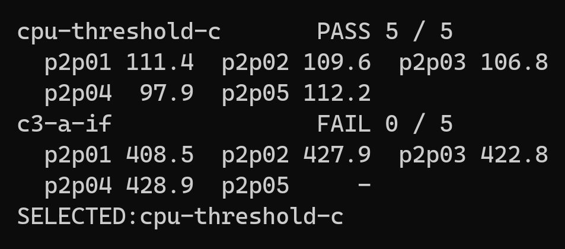
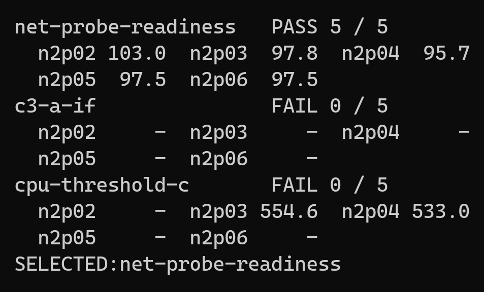
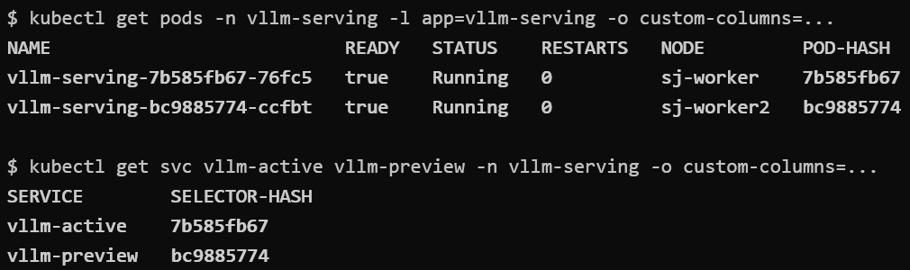
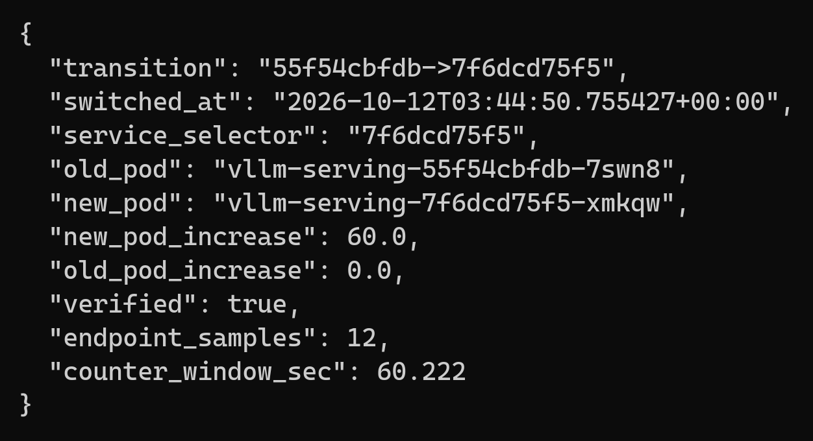
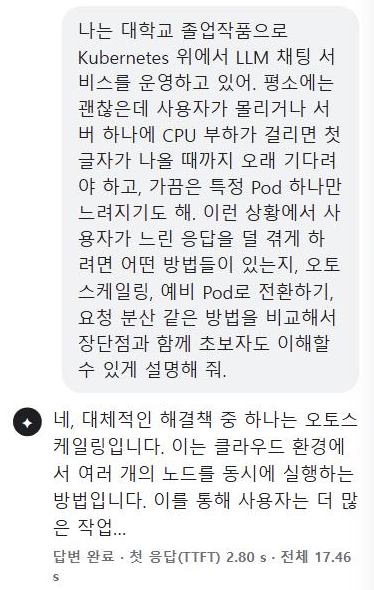
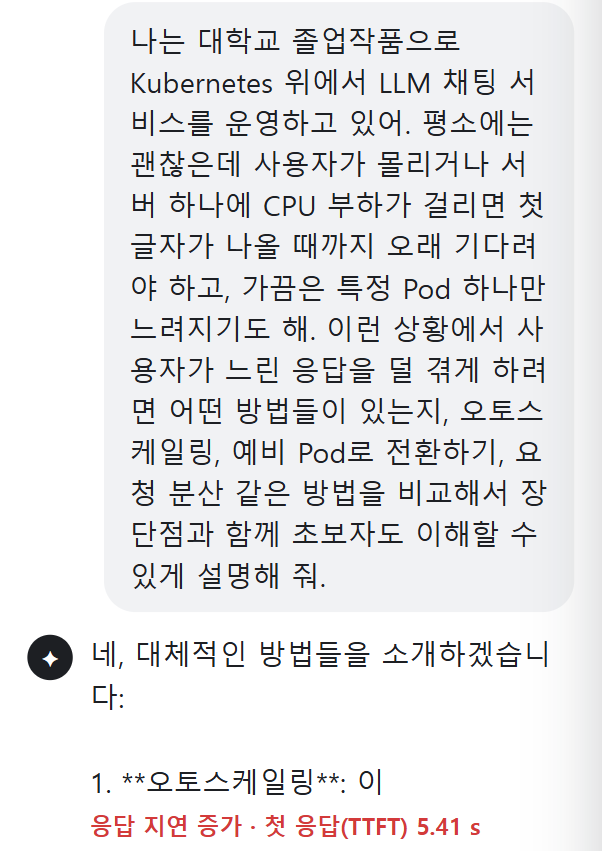
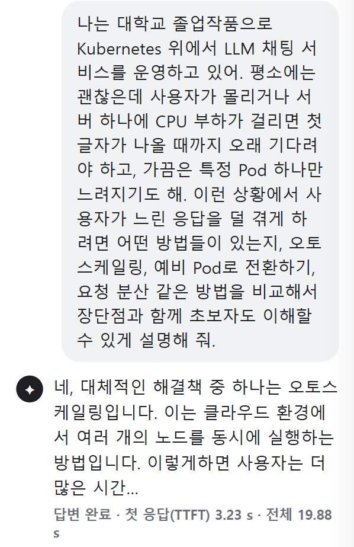
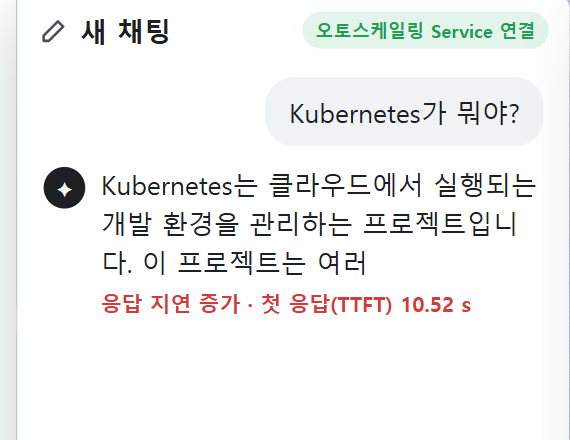
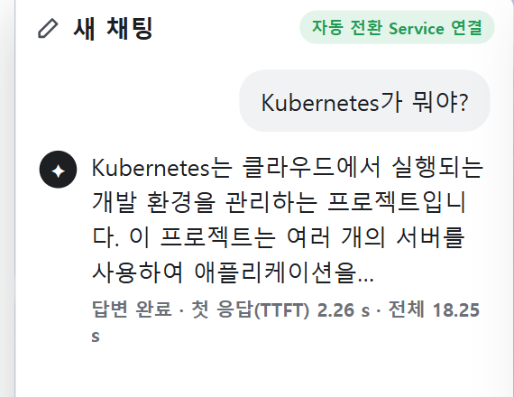

LLMOps 기반 응답 저하
자동 전환 시스템
쿠버네티스 LLM 서비스의 응답 저하를 감지해
새 요청을 준비된 예비 Pod로 자동 전환
[지도교수: 김영한 교수님 / 소속: 전자정보공학부 it융합학과 / 작성자: 박소정]
https://github.com/sojjeoi/capstone-k8s-recovery
안녕하세요. LLM에 질문했는데 답이 유난히 늦었던 적 있으시죠? 서버 전체가 멈춘 게 아니라, 요청을 맡은 서버 한 대가 느려졌다면 다음 질문도 그 서버로 가야 할까요? 저희는 여기서 출발했습니다.
[화면에서 뺌] 표지 LLMOps 정의 줄 “LLMOps: LLM 서비스를 배포하고, 지켜보고, 문제가 생기면 대응하는 운영 방식”. 질문 대비 대본 예시: "LLMOps는 LLM 서비스를 배포하고 지켜보며, 문제가 생기면 대응하는 운영 방식입니다. 저는 그중 문제가 생겼을 때 대응하는 부분, 응답 저하를 감지해 자동으로 피하는 시스템을 만들었습니다."
[화면에서 뺌] 표지 오른쪽의 사용자→Pod 아이콘·화살표와 “빠른 응답 / 느린 응답?” 표시.
01 문제 정의
정상 상태에 숨겨진 서비스 저하
02 / 14
Microsoft
실제 서비스: 문제 발생
서버 안의 네트워크 지표가 급감
관리 시스템: 정상 표시
서버를 Up(정상)으로 판단
빨간 점은 사용자가 직접 재부팅한 시점
네트워크 지표가 급감했는데도, 관리 시스템은 서버를 ‘정상’으로 표시했다
즉, 정상 표시만으로 실제 서비스 품질을 판단하기 어렵다는 문제를 보여준다
서버가 정상이라고 표시돼도 사용자는 느린 답변을 받을 수 있습니다. 이런 상태는 클라우드 연구에서 ‘그레이 장애’로 다뤄집니다. 저희는 LLM 서비스에서 이 응답 저하를 발견하고, 사용자에게 가는 요청을 전환하는 문제에 집중했습니다.
[보조] 논문: Peng Huang, Chuanxiong Guo, Lidong Zhou, Jacob R. Lorch, Yingnong Dang, Murali Chintalapati, Randolph Yao, “Gray Failure: The Achilles’ Heel of Cloud-Scale Systems”, HotOS ’17, Microsoft Research. https://www.microsoft.com/en-us/research/wp-content/uploads/2017/06/paper-1.pdf (2026-10-25 원문 PDF 내려받아 4쪽 Figure 3 확인)
[보조] Figure 3 원문 설명 요약: 앞의 세 그래프는 그레이 장애 전후의 VM 내부 성능 지표이며, 장애를 일으킨 사건(VM 이전) 직후 네트워크 지표가 떨어진다. 오른쪽 아래 그래프는 관리 시스템(compute manager)의 관찰로, 초록 점은 VM이 건강하다고 본 것, 빨간 점은 건강하지 않다고 본 것이다. 빨간 점은 모두 사용자가 직접 재부팅해서 생긴 것이고, 실제 문제는 그림의 기간이 한참 지난 뒤에야 발견됐다.
[보조] 화면 그림 = 원문 PDF 4쪽 Figure 3 영역(그래프 4개, 축·범례 포함)을 600dpi로 그대로 잘라 확대(assets/grayfailure-fig3.png). 원본 축·범례·점·관계는 바꾸지 않았고, 주황·청록 테두리와 오른쪽 설명만 덧그렸다. Azure VM 사례이며 LLM Pod나 우리 시스템에서 잰 그래프가 아니다.
[보조] 우리 쪽 기록에서 비슷한 차이: 네트워크 지연에서 CPU 기반 오토스케일링은 CPU가 거의 오르지 않아 확장하지 않았고, 품질 위반은 379~390초였다(13장, HPA 비교 결과 2026-10-23).
[화면에서 뺌] 직전 2장의 kubectl 출력(2026-10-15)과 사용자 채팅(CPU 압박, 2026-10-24) 나란히 배치는 서로 다른 시점의 화면이라 같은 장애 순간의 증거처럼 보일 수 있어 뺐다. 그림 파일(assets/evidence-kubectl-crop.png, chat-02-slow-answer.png)은 보존.
[화면에서 뺌] CHI 2026 ‘지연을 알아차린 비율’ 그래프(Tan 외, doi.org/10.1145/3772318.3790716)와 노트북 LLM 화면도 이전에 뺐다. 그림 파일은 보존.
[화면에서 뺌] 그림 설명 “Figure 3 원본 · Azure VM 사례(논문 그림을 그대로 확대하고 색 테두리만 덧그림) · 왼쪽 두 그래프와 오른쪽 위 = VM 내부 성능 지표(디스크·CPU·네트워크), 오른쪽 아래 = 관리 시스템(compute manager)의 판단”과 결론 “서버의 정상 표시만으로 사용자가 겪는 서비스 품질을 판단하기 어렵습니다.” (출처 줄에 Figure 3 · Azure VM 사례 표기는 남음)
02 목표와 기준
프로젝트 목표 및 성공 기준
03 / 14
[프로젝트 목표]
서버의 정상 표시만으로 파악하기 어려운 응답 저하에도,
사용자에게 안정적인 응답 서비스 제공
[성공 기준]
①
사용자 응답 지연 감소
요청별 응답 시간 및 SLO 위반 누적 시간으로 평가
②
LLM 응답 정상 수신
전환 후 스트리밍 응답 완료 여부 확인
그래서 목표는 특정 Pod가 느려져도 사용자가 안정적인 속도로 답을 받게 하는 것입니다. 같은 요청 조건에서 응답 지연과 느린 요청 비율이 줄었는지로 판단했고, 진행 중이던 답변이 끝까지 오는지는 별도 스트리밍 점검으로 확인했습니다.
[보조] ①은 요청별 응답 시간·SLO 위반 누적 시간(10~13장), ②는 스트리밍 4건 점검(부록 A)으로 서로 다른 시험.
03 시스템 구조
시스템 아키텍처
04 / 14
운영 지표 → 상황별 감지기 → 복구 정책 → Argo Rollouts → 새 요청 경로 변경 → 응답 검증
사용자
Kubernetes Service
현재 요청
전환 후 새 요청
활성 Pod
저하 발생
예비 Pod
준비됨
CPU · /health
Prometheus
지표 수집
응답 검증
요청별 처리 Pod · 응답 시간
상황별 감지기
CPU 임계값
CPU 압박에서 선택
상태 확인 규칙
네트워크 지연에서 선택
Isolation Forest: 비교 대상 · 자동 전환에는 미선택
감지 신호
복구 정책
예비 Pod 준비 확인
Argo Rollouts
Blue / Green 전환
새 요청 경로 변경
구조입니다. 운영 지표에서 감지기가 저하를 찾으면, 복구 정책이 예비 Pod가 준비됐는지 확인하고, Argo Rollouts가 새 요청의 경로를 예비 Pod로 바꿉니다.
[보조] CPU 압박에는 CPU 임계값, 네트워크 지연에는 net_probe 규칙을 연결. 감지기가 달라도 정책 → Rollouts → 검증 경로는 같다.
[하단에서 옮김] 청록 = 직접 구현 · 회색 Pod = 저하가 발생한 활성 Pod · 기존 아키텍처를 간소화한 구조 개념도
[하단에서 옮김] 청록 = 직접 구현 · 회색 Pod = 저하가 발생한 활성 Pod
[보조] 화면의 ‘상태 확인 규칙’ = net_probe(최근 60초 평균 /health 확인 시간 > 0.0064초).
04 분석 목표
핵심 성능 평가 지표
05 / 14
문제 1 성능 저하 감지→ 문제 2 실제 요청 이동→ 문제 3 사용자 응답 개선
Q1
저하를 감지하는가?
서버를 5번 느리게 만들고,
4번 이상 경고하면 감지 성공
Q2
정상인데도 잘못 울리지 않는가?
정상 상태로 4번 시험해 감지기별 잘못된 경고를 센다.
2건 이상 차이나면 덜 울린 쪽 선택
Q3
새 Pod로 요청이 옮겨지는가?
전환 뒤 새 Pod가 요청 30건 이상 ,
기존 Pod가 2건 이하 받으면 이동 확인
Q4
사용자 응답이 개선되는가?
같은 장애에서 품질 기준을 어긴 시간이
전환한 쪽에서 더 짧으면 개선
이를 세 가지 데이터 문제로 나눴고, 판정 숫자를 미리 정했습니다. 다섯 번 중 네 번 이상 363초 안에 감지하는지, 새 Pod 요청이 30건 이상 느는지, 그리고 응답 시간이 정상의 두 배인 0.648초를 30초 넘게 넘으면 품질 위반으로 셌습니다.
[보조] 0.648초 = 정상 보정 P95 중앙값 0.324초 × 2, 이 실험의 상대 기준. 정상 2건 이상 차이 규칙, 무조치−조치 > 0초면 그 쌍은 개선.
[화면에서 뺌] 사전 등록된 정확한 판정 숫자: Q1 주입 후 363초 안 3회 연속 신호(60초 창을 15초마다 평가), 5회 중 4회 이상 · Q2 정상 4회, 감지 기준 통과 후보 사이 2건 이상 차이면 적은 쪽 선택(0~1건 차이는 동등) · Q3 전환 후 확인 구간에서 새 Pod +30건 이상 · 기존 Pod +2건 이하, 유효 세션 3회 · Q4 P95 > 0.648초가 30초 이상 또는 성공률 99% 미만인 시간 = SLO 위반, 무조치−조치 위반 시간 > 0초면 그 쌍은 개선.
[하단에서 옮김] 0.648초 = 정상 상태 보정 3회(각 300건 · 1 RPS · max_tokens=1)의 P95 중앙값 0.324초 × 2 — 이 합성 요청·모델·환경의 상대 평가 기준이며 일반 사용자의 허용 시간이 아님 P95는 최근 60초 응답 중 느린 쪽 5%가 시작되는 시간 · 모든 판정 기준은 공식 시험 전에 문서로 고정(사전 등록)
[하단에서 옮김] 0.648초: 정상 응답 기준의 2배로 정한 본 실험의 평가 기준
04 검증 방법
세션을 나눠 독립 검증
06 / 14
같은 실험의 연속 기록은 서로 비슷해서, 학습과 시험에 함께 쓰면 새로운 실험에서의 감지 성능을 판단하기 어렵다.
→
→
학습
정상 패턴 익히기
기준 조정
경고 경계 정하기 (정상 세션)
독립 시험
처음 보는 세션으로 평가
IF (c3-A)
정상 패턴을 학습하는 모델
정상 10세션
1,619행
정상 6세션 · 924행
학습과 다른 세션
CPU 압박: 정상 4 + 압박 5
네트워크: 정상 4 + 지연 5
CPU 임계값
CPU 평균 > 기준
학습 없음 (규칙)
정상 4세션 · 421행
→ 1.684 코어
CPU 압박: 정상 4 + 압박 5
네트워크: 정상 4 + 지연 5
상태 확인 규칙
상태 확인 시간 > 기준
학습 없음 (규칙)
정상 20세션 (개발 자료)
→ 0.0064초
네트워크: 정상 4 + 지연 5
CPU 압박 시험에선 미평가
정상 기록에서 이상 신호가 3번 연속 나오지 않는 값들 중,
작은 변화에도 가장 민감하게 반응하는 값 을 감지 기준으로 골랐습니다
이 숫자를 믿을 수 있게 학습, 기준 조정, 시험에 서로 다른 세션을 썼습니다. 시간이 가까운 값은 비슷해서, 섞이면 성적이 좋아 보이기 때문입니다.
[보조] IF c3-A 학습 정상 10세션 1,619행 / 보정 6세션 924행. CPU 임계값 기준 1.684코어는 c1 보정 4세션 421행, net_probe 기준 0.0064초는 정상 20세션(1초 probe 구성). 공통 규칙: 보정 세션에서 3회 연속 신호가 0번인 가장 민감한 값.
[하단에서 옮김] CPU 임계값 기준은 c1 보정 4세션으로 정함(c3-A 보정 6세션 아님) · net_probe 기준은 1초 probe 구성의 정상 20세션(c3-A 검증 세션 포함), 공식 시험은 11초 구성 출처: c3 freeze.json · threshold.json, bck-fixed-threshold-calibration-20261007, network_detector_dev probe-metric result.json, PHASE2 · NETWORK 사전 등록
[하단에서 옮김] 출처: 감지기 학습·기준 보정 기록
[화면에서 뺌] 판정 기준은 공식 시험 전에 문서로 고정(사전 등록) · 독립 시험 세션은 어느 감지기의 학습·기준 조정에도 쓰지 않았다
[보조] 화면의 ‘상태 확인 규칙’ = net_probe(최근 60초 평균 /health 확인 시간 > 0.0064초).
05 데이터 준비
감지기 입력 데이터와 판단 기준
07 / 14
입력 데이터
감지기 · 판단 기준
판정
CPU · 메모리 사용량
60초 창, 15초마다 평균 · 변화 추세
cpu_mean · cpu_slope
memory_mean · memory_slope
→
Isolation Forest
정상 기록으로 패턴 학습 · 4개 특징 사용
이상 점수가 정해 둔 경계를 넘으면 이상
CPU 사용량
최근 60초 평균
cpu_mean
→
CPU 임계값 규칙
학습 없음 · 이번 환경 기준값 1.684코어
정상 땐 연속으로 넘지 않던 CPU 값을 넘으면 이상
Pod 상태 확인에 걸린 시간
쿠버네티스가 /health 요청을 보내
응답받기까지 걸린 시간, 60초 평균
→
상태 확인 규칙
학습 없음 · 이번 환경 기준값 0.0064초
정상 땐 연속으로 넘지 않던 확인 시간을 넘으면 이상
→
→
정상
경로 그대로 유지
다음 15초에 다시 판단
이상
3번 연속 이면 감지 신호
→ 예비 Pod로 전환 단계
평가용 데이터
사용자 질문 기록(응답 시간 · 성공 여부 · 처리한 Pod)은 감지에 쓰지 않고, 전환 효과 평가에만 사용
감지기 세 개가 무엇을 보고 이상을 판단하는지입니다. IF는 CPU·메모리의 60초 평균과 변화 추세로 정상 패턴을 학습하고, 두 규칙은 학습 없이 CPU 평균과 상태 확인 시간을 정상 기록으로 정한 기준값과 비교합니다. 15초마다 판단해 이상이 3번 연속 나오면 감지 신호를 냅니다. 사용자 응답 기록은 감지에 쓰지 않고 효과 평가에만 썼습니다.
[보조] 두 규칙 기준 = 보정용 정상 세션에서 3번 연속 신호가 0번인 가장 민감한 값. CPU 1.6843코어는 정상 최고치(c1ca02 1.705)보다 낮다: 정상 점 21개가 넘었지만 3번 연속은 없었다(bck-fixed-threshold-calibration-20261007.json). 그래서 "정상 최고치를 넘으면"이 아니라 "정상 땐 연속으로 넘지 않던 값"으로 적었다.
[화면에서 뺌] 판단 띠 이전 문구 "CPU 평균 1.684코어를 넘으면 이상" / "확인 시간 0.0064초를 넘으면 이상", 설명 줄 "학습 없음 · 정상 기록으로 기준값 설정".
[화면에서 뺌] 이전 화면(원자료 → 가공 → 사용처 3열, 평가용 데이터 한 줄 전체 흐름)과 대본: 감지기에는 원자료를 그대로 넣지 않았습니다. CPU와 메모리는 60초 평균과 변화 추세로 바꿔 IF에 넣었고, CPU 임계값은 CPU 평균을, net_probe는 Pod 상태 확인에 걸린 시간을 봤습니다. 사용자 응답 시간은 효과 평가에만 썼습니다.
[보조] net_probe는 kubelet의 /health readiness probe 소요 시간 60초 평균. Pod의 처리 시간도 포함돼 순수 네트워크 왕복 지연이 아니다. IF는 학습 세션으로 정상 패턴을 배우고, 다른 정상 세션으로 판정 경계를 정했다.
[하단에서 옮김] IF 입력 4개는 학습 세션 평균·표준편차로 크기를 맞춰 사용 · 기울기 = 60초 창 5개 점의 최소제곱 기울기 · 대기 요청 수·캐시 사용률 특징은 학습 자료에서 변화가 없어 제외 출처: input_integrity.py, c3 freeze.json · feature-schema.json, n2_common.py, rollout.yaml(/health, 5초 주기)
[보조] 아래 점선 영역의 ‘사용자 질문 기록’ = 사용자 쪽에서 1초에 1건 보내는 짧은 시험 요청의 기록(요청마다 응답 시간·성공 여부·처리한 Pod). 60초 단위 = 최근 60초 창의 P95 응답 시간과 성공률로 품질 기준(P95 > 0.648초 또는 성공률 99% 미만) 위반 여부를 보고, 위반 시간을 합산.
[화면에서 뺌] 이전 문구: 사용자 요청 기록(요청별 응답 시간 · 성공 여부 · 처리한 Pod) → 60초 창 P95 · 성공률(SLO 위반 구간의 누적 시간, 응답 중앙값) → 조치 효과 평가에만 사용(감지기의 학습 · 기준 조정 · 판정에는 넣지 않음, 10~14장 결과).
[화면에서 뺌] 이전 문구: “/health 확인 소요 시간 — kubelet이 활성 Pod에 보내는 상태 확인(readiness probe)”, “net_probe 규칙(net_probe > 기준) — Pod가 응답을 처리하는 시간도 포함 → 순수한 네트워크 왕복 지연이 아님”. 네트워크 규칙(화면 이름) = net_probe 상태 확인 시간 규칙(기준 0.0064초). Pod 처리 시간도 포함하므로 순수한 네트워크 왕복 지연 측정은 아님.
[화면에서 뺌] 가운데 칸 이전 문구 “60초 평균 — 소요 시간 합 ÷ 확인 횟수 = net_probe”. 화면의 ‘상태 확인 규칙’ = net_probe(최근 60초 평균 /health 확인 시간 > 0.0064초), Pod 처리 시간 포함.
[화면에서 뺌] 아래 영역의 “사용자 응답 평가용 데이터”, “감지기 입력과 분리”, 오른쪽 칸 “감지기 학습에는 사용하지 않음” → 영역 제목 “효과 평가용 데이터”와 “감지에는 사용하지 않음” 한 줄로 정리.
06 결과 ① 감지
저하 유형별 감지기 선정
08 / 14
CPU를 바쁘게 하거나 네트워크를 늦춰, 감지기가 이상을 제대로 알아채는지 비교했다.
CPU 임계값 규칙
상태 확인 규칙
IF (c3-A)
CPU 압박
5/5
—
이 시험에선 미평가
0/5
네트워크 지연
0/5
5/5
0/5
선택: CPU 압박 → CPU 임계값 규칙 ·네트워크 지연 → 상태 확인 규칙
저하 실험 5번 중 4번 이상 감지하면 통과 → 통과한 감지기들끼리 정상 실험 4번에서 잘못 울린 횟수를 비교
IF 모델은 363초 안 3회 연속 신호가 없어 이번 두 상황에선 비선택
증거 · CPU 압박 시험 선택 기록

증거 · 네트워크 지연 시험 선택 기록

숫자 = 첫 3회 연속 신호까지 걸린 초(363초 안이면 통과), -는 신호 없음
결과입니다. CPU 압박은 CPU 임계값이, 네트워크 지연은 net_probe가 다섯 번 모두 잡았습니다. IF는 정상에서 조용했지만 이번 두 상황에선 제때 감지하지 못해, 상황에 맞는 신호를 골랐습니다.
[보조] 첫 3연속 신호 CPU 임계값 97.9~112.2초, net_probe 95.7~103.0초. 네트워크 지연에서 CPU 임계값 0/5. IF는 CPU 환경 정상 기록으로 학습한 모델이라 다른 조건까지 일반화하지 않는다.
[화면에서 옮김] 캡처: Phase 2 Stage 1 Gate 2 출력(2026-10-12) — cpu-threshold-c p2p01~05 PASS 111.4/109.6/106.8/97.9/112.2초, c3-a-if FAIL 408.5/427.9/422.8/428.9초·p2p05 3연속 없음.
[하단에서 옮김] 첫 3회 연속 신호: CPU 임계값 97.9~112.2초, net_probe 95.7~103.0초 · IF는 CPU 환경 정상 기록으로 학습한 모델이며, 다른 조건의 가능성까지 부정하지 않음 출처: PHASE2-FINAL-RESULT-20261012, NETWORK-ENV-VALIDATION-20261019, phase2-selection-evidence.json
[하단에서 옮김] 출처: Phase 2 최종 결과(2026-10-12), 네트워크 추가 검증 최종 결과(2026-10-19)
[화면에서 뺌] 선택 줄 아래 설명: 정상 4세션 불필요 신호: CPU 임계값 규칙 1건 · 상태 확인 규칙 0건 · IF 0건(두 시험 모두) / IF는 정상에서 조용했지만 두 저하 모두 363초 안 3회 연속 신호가 없어 이번 두 상황에선 비선택. 이전 부제(저하 실험 5번 중 4번 이상 감지하면 통과 → 통과한 감지기들끼리 정상 실험 4번에서 잘못 울린 횟수를 비교)는 선택 줄 아래로 옮김.
[화면에서 뺌] 이전 부제: 같은 독립 시험 기록에서 후보를 함께 평가 · 주입 후 363초 안 3회 연속 신호, 5회 중 4회 이상이면 통과
[보조] 오른쪽 두 출력 = 동결된 감지기 선택 근거 파일(experiments/results/phase2_selection/phase2-selection-evidence.json, phase2_network_env_selection/phase2-network-selection-evidence.json)의 Gate 2 결과를 읽기 전용 스크립트로 출력해 터미널 모양 그림으로 만든 것(2026-10-25 생성, 원자료 변경 없음). 네트워크 지연: net-probe-readiness n2p02~06 PASS 103.0/97.8/95.7/97.5/97.5초, c3-a-if 5회 모두 3연속 없음, cpu-threshold-c n2p03 554.6초·n2p04 533.0초(363초 초과)·나머지 3연속 없음. 이전 CPU 캡처(assets/evidence-gate2-cpu-crop.png)는 보존.
[보조] 화면의 ‘상태 확인 규칙’ = net_probe(실험 기록 ID net-probe-readiness). 터미널 출력 그림 속 이름은 원본 기록 그대로 둠.
06 결과 ② 요청 전환
전환 뒤 요청이 새 Pod로 갔는가?
09 / 14
① 감지 신호 → ② 예비 Pod 준비 확인 → ③ Service 경로 변경 → ④ 새 Pod 요청 증가

두 Pod가 모두 준비돼 있고, 그중 하나만
사용자 요청을 받는 활성 Pod로 지정된 상태
CPU 압박 · 자동 전환
10/10
네트워크 지연 · 자동 전환
10/10
새 Pod 요청 +60 (CPU · 네트워크 모두)
기존 Pod +0

경로 변경 뒤 새 Pod +60 · 기존 +0
신호가 났다고 요청이 옮겨진 건 아닙니다. 예비 Pod가 준비된 상태에서 경로를 바꿨고, 통일 비교의 CPU 압박 10번, 네트워크 지연 10번 모두 새 Pod 요청만 60건 늘고 기존 Pod는 0건이었습니다.
[보조] 2026-11-06 갱신: 10/10·10/10 = 통일 비교 유효 G 세션의 service_check.verdict(verified=True, 새 Pod +60, 기존 +0). CPU n2s51~60, 네트워크 n2s11·13·26·27·61·62·63·65·66·68. 요청 폭주 10/10도 같은 결과(이 장 대상 아님). 이전 화면 값 6/6·13/13, +60·+60~66은 시연 세션을 포함한 다른 집계라 합치지 않았다(아래 설명 참고).
[화면에서 뺌] 이전 6/6·13/13 구성(2026-10-29 집계, 각 세션 summary의 policy action service_check.verdict: verified=True, old_pod_increase=0): 공식 Stage 2 CPU p2s01~03 · 네트워크 n2s02~04(각 3/3) + 같은 전환 확인 코드를 쓴 다른 실험 세션 — CPU: 실제 채팅 시연 p2live01~03(demo-only, 새 Pod +60) / 네트워크: HPA 비교 n2s11·n2s13·n2s26(보충), 요청 추적 n2s32, 채팅 캡처 n2s41~46(demo-only)(새 Pod +60~66). 사전 등록된 공식 시험은 3회씩이고 나머지는 다른 목적의 실험이라, 이 숫자는 "전환 뒤 요청 이동" 확인에만 쓴다. 요청 폭주 n2s14·n2s15도 2/2 확인(이 장 대상 아님). 화면 이전 값: 3/3 · 3/3, 네트워크 +62~63.
[보조] 왼쪽 캡처는 10-15 전환 전 상태 조회, 오른쪽은 10-12 CPU Stage 2 p2s03 전환 기록. 기존 발표의 8/8·1.37초는 이전 A/B 기록이라 쓰지 않음.
[화면에서 옮김] 왼쪽 캡처: 2026-10-15 06:16 UTC 읽기 전용 조회 — vllm-active → 7b585fb67(활성), vllm-preview → bc9885774(예비), 두 Pod Ready. 오른쪽 캡처: CPU 압박 Stage 2 p2s03(2026-10-12) — selector 55f54cbfdb→7f6dcd75f5, new_pod_increase 60, old 0, verified, endpoint 표본 12, 창 60.222초.
[하단에서 옮김] CPU 압박 p2s01~03(CPU 임계값 신호) · 네트워크 지연 n2s02~04(net_probe 신호, n2s01은 지연 단계 부족으로 무효) · 선택자 전환 0.53~0.55초 · 두 캡처는 날짜가 다른 기록이라 수치를 합치지 않음 기존 발표의 8/8·중앙값 1.37초는 이전 A/B 실험 기록이라 이 장에서 쓰지 않음 · 출처: PHASE2-FINAL-RESULT-20261012, NETWORK-ENV-VALIDATION-20261019
[하단에서 옮김] 출처: Phase 2 최종 결과, 네트워크 추가 검증 최종 결과
[보조] 두 터미널 그림(2026-10-25 정리): 왼쪽 kubectl 캡처는 원본 캡처의 글자 색만 회색으로 바꾼 것(assets/evidence-kubectl-crop-mono.png, 내용·배치 그대로, 원본 evidence-kubectl-crop.png 보존). 오른쪽은 phase2_stage2/summary-guarded_pressure_act-p2s03-…-stage2.json의 전환 기록(promote verify · service_job · service_check)에서 같은 항목을 읽기 전용으로 다시 출력해 선명하게 그린 것(evidence-p2s03-switch-hd.png, 값 동일, 원본 그림 보존).
06 결과 ② 요청 전환
전환 뒤 실제 답변도 도착했는가?
10 / 14

CPU 압박 중 자동 전환 뒤 실제 채팅 화면 (별도 시연 캡처) · 청록 테두리 = 새 Pod가 보낸 답변 완료
새 요청 전환
↓
새 Pod에서 처리
↓
사용자 화면에 답변 완료
보조 근거 · 별도의 요청별 추적 기록
전환 후 새 연결 요청 552건 → 새 Pod 552건 · 기존 Pod 0건
별도 실제 채팅에서 사용자의 요청에 따른 LLM 서버의 답변이 끝까지 도착하는지를 확인했다.
앞에서는 요청 경로가 실제로 바뀌었는지 확인했습니다. 여기서는 전환 후 LLM 서비스가 답변을 끝까지 보내는지도 확인했습니다. 화면은 실제 서비스에서 답변이 사용자에게 도착한 모습입니다. 별도의 요청별 기록에서도 전환 후 새 연결 요청 552건이 모두 새 Pod에서 처리됐습니다.
[보조] 552 = 자동 전환 세션에서 Service 선택자 변경(48.9초) 이후 새 연결 요청 수. 처리 Pod: 새 Pod 552 · 구 Pod 0 · 미확인 0, 접속 로그 대조로 요청마다 특정. 새 Pod 첫 요청 49.5초(선택자 +0.59초). keepalive 보호는 주장하지 않음.
[보조] 응답 시간 중앙값 = 같은 한 쌍(C 무전환 553건 / G 자동 전환 552건)의 선택자 변경 이후 짧은 합성 요청(1 RPS) 지연. P95 8.40초 → 0.33초, 0.648초 초과 302건 → 2건. 채팅 답변 전체 생성 시간이나 TTFT가 아니다. 두 세션은 같은 기간 재실행이 아니며 무전환에는 예비 Pod 없음.
[보조] 왼쪽 채팅 화면 = p2live01(2026-10-27, demo-only, 공식 결과 아님) 3번째 질문의 B 창(Service 경로). CPU 압박 → 자동 전환(23:26:03 KST) 뒤 23:30:40에 보낸 질문이 새 Pod(9jwxc) 접속 로그로 확인됨. 첫 응답 2.80초 · 전체 17.46초, 오류 없이 스트림 종료. 답 길이 상한 48토큰(시연 기본값)이라 끝이 "…"로 끝남(finish=length) — 전환 때문에 잘린 것이 아니다. 원본 experiments/results/demo_only_live/screen-p2live01/capture-round3-20261027T1431Z.png에서 B 창 부분만 잘라 냄(assets/chat-live-switch-complete.png).
[화면에서 뺌] 이전 그림 assets/chat-13-complete-notime.png(파일 보존)에 대한 설명: 2026-10-24 22:50(KST) demo/replay-screen 시연 화면에서 실제 Qwen2.5-0.5B-Instruct에 질문 1건(“Kubernetes 설명해줘.”)을 Service(vllm-active) 경로로 보내 끝까지 받은 답(잘림 없음). 클러스터 변경 없는 정상 상태이며 전환 직후 장면이 아니다. 원래 창 안 시간(첫 응답 2.31초 · 전체 30.29초)은 이 질문 1건 값이고 실험 수치와 무관 — ③의 0.30초와 헷갈리지 않도록 슬라이드 그림에서는 이 시간 줄만 잘라 냈다(assets/chat-13-complete-notime.png, 원본 chat-13-complete-live.png 보존). 전체 시간이 약 30초인 화면을 쓰려고 질문 문구를 바꿔 가며 여러 번 보냈다(같은 답도 27~32초로 흔들림, 답 길이 104토큰). 답변 길이 상한만 실행 옵션 --max-tokens 256(기본 48)으로 늘림, 시연 코드 변경 없음. 모니터링 패널(MOCK)은 잘라 냄.
[보조] 전환 당시 진행 중이던 스트리밍 답변 완료(기본 1/4 → 종료 대기 설정 3/4)는 부록 A.
[하단에서 옮김] 출처: experiments/results/hpa_compare/analysis/RESULT-SUMMARY-PER-REQUEST-DRAIN-20261023.md §1, analysis/trace-pair-20261023. 이전 MOCK 채팅 창(assets/chat-13-*.png)은 화면에서 뺐고 파일은 보존.
[하단에서 옮김] ② 채팅 화면 = 실제 모델 답변 시연 캡처(질문 1건, 정상 상태) · ①·③ 수치 = 요청별 추적 실험 결과(채팅 1건에서 잰 값 아님)
[하단에서 옮김] 요청별 추적 한 쌍(네트워크 지연, 무전환 1회·자동 전환 1회), 새 연결 요청 기준 · 출처: 요청별 추적 결과(2026-10-23)
[화면에서 뺌] 아래 결론 문장 “전환 전 요청 49건은 이미 느렸습니다. 전환은 이후 요청의 피해를 줄였습니다.”(읽는 대본에는 그대로 있음)
[주의] 채팅 캡처는 Service(vllm-active) 경로로 받은 실제 답변 1건(2026-10-24, 클러스터 변경 없는 정상 상태)이며 전환 직후에 찍은 장면이 아니다. 552건 요청별 추적(네트워크 지연, 자동 전환 1회)과는 별개의 확인이다. 완료율·답변 시간은 화면에 새로 넣지 않았다.
[화면에서 뺌] 이전 13장 구성: 제목 “전환 뒤 새 요청 552건, 모두 새 Pod로 이동”, ① 요청 이동(새 Pod 552건 / 기존 Pod 0건, 접속 로그 대조 · 미확인 0건, 경로 변경 48.9초 → 새 Pod 첫 요청 49.5초), ③ 응답 시간 감소(짧은 합성 요청 응답 시간 중앙값 무전환 1.32초 → 자동 전환 0.30초, 막대그래프).
[화면에서 뺌] 이전 읽는 대본: 핵심 장입니다. 세 가지를 확인했습니다. 첫째, 전환 뒤 들어온 새 연결 요청 552건을 접속 로그와 대조하니 모두 건강한 새 Pod가 처리했고, 느린 기존 Pod는 0건이었습니다. 둘째, 가운데 화면처럼 실제 모델의 답변이 사용자 화면에 끝까지 도착합니다. 이 화면은 시연용으로 따로 찍은 한 건입니다. 셋째, 같은 요청별 추적 실험에서 짧은 요청의 응답 시간 중앙값이 무전환 1.32초, 자동 전환 0.30초였습니다. 다만 전환 전 49건은 이미 느렸으므로, 사전 예방이 아니라 이후 요청의 피해를 줄인 것입니다.
06 결과 ③ 사용자 지연
CPU 압박 환경 성능 개선
11 / 14
같은 CPU 압박에서 네 가지 방식을 같은 규칙으로 각 10회 비교
방식마다 유효 10회 결과
다른 세 방식: 매번 190초 초과
자동 전환: 10번 모두 0초
269.7
무전환
232.9
오토스케일링
247.0
계속 분산
0
우리 시스템
막대·숫자 = 중앙값 · 선 = 최소~최대 · 위반 누적, 단위: 초
실제 채팅 화면: 같은 질문을 보낸 지 약 22초 뒤
무전환 (기존 Pod)
우리 시스템 전환


첫 응답 5.41초 · 전체 응답 36.29초
첫 응답 3.23초 · 전체 응답 19.88초
사용자 쪽 결과입니다. 같은 CPU 압박을 네 방식에 10번씩 줬습니다. 무전환, 오토스케일링, 계속 분산은 중앙값 233~270초 동안 품질 기준을 어겼고 매번 190초를 넘었습니다. 우리 시스템은 10번 모두 0초였습니다.
[보조] 2026-11-06 통일 비교(UNIFIED-COMPARISON-PREREG-20261104, experiments/results/hpa_compare/analysis/UNIFIED-TABLE-20261105T151043Z). SLO 위반 누적 중앙값(최소~최대), 각 유효 10회: 무전환 269.7(200.5~292.5) · 오토스케일링 232.9(191.5~291.8) · 계속 분산 247.0(192.0~291.8) · 우리 시스템 0.0(0~0). 세 방식 각각 대 우리 시스템 Mann-Whitney U 양측 p < 0.0001(참고값). 우리 시스템 감지기 = CPU 임계값 규칙. 무효 무전환 2회(b1, b5)는 수치 제외.
[보조] 오른쪽 채팅 그림은 통일 비교의 세션이 아니라 별도 시연 캡처다(아래 설명).
[화면에서 뺌] 이전 왼쪽 그래프와 문구: 무전환 대 자동 전환 공식 5쌍 막대(204.504 / ≥210.83 / 201.68 / 287.79 / 207.396초 대 0초), “무전환 매번 200초 초과, 자동 전환 8번 모두 0초”. 감지기가 c1 IF로 달라 통일 표에 합치지 않았다. 아래 8쌍·5쌍 설명은 그 이전 화면의 기록이다.
[이전 화면 기록] 8쌍 = 공식 5쌍(ab01~05, 막대) + 계약 r1 §7에 사전 등록된 같은 동결 조건 추가 반복 3쌍(ab06 202.578 / ab07 238.484 / ab08 294.715초 → 자동 전환 모두 0초, 2026-10-13, docs/final/PHASE1-AB-ADDITIONAL-REPLICATION-20261013.md). 2026-10-30 화면 문구에 반영, 막대 그래프는 공식 5쌍 그대로.
[보조] 공식 5쌍은 c1 IF 신호로 한 초기 전환 효과 비교. 0초는 응답 시간이 아니라 위반 누적 시간. ab02는 하한값, 추가 3쌍은 공식 결과에 합치지 않음.
[하단에서 옮김] 공식 비교 5쌍(ab01~ab05, 사전 고정) · 두 군 모두 같은 c1 IF 감지 신호를 쓰고 조치만 다름(무전환 = 기록만, 자동 전환 = 예비 Pod로 전환) → 감지기 성능이 아닌 전환 효과 비교 ab02 무전환 값은 하한(≥) · 사전 등록 추가 3쌍(ab06~08)은 별도 근거로 이 그래프에서 제외 · 출처: PHASE1-AB-ADDITIONAL-REPLICATION-20261013
[보조] 두 채팅 창은 2026-10-28 실제 자동 전환 시연 1회(p2live03, demo-only, counted=false, 공식 5쌍 아님) 2번째 질문의 같은 순간 화면(frame-r2-f)이다. CPU 압박 → 감지 → 예비 Pod 자동 전환 → 요청 이동 검증 VERIFIED(새 Pod +60 · 기존 +0, 13:09:52 KST) 뒤, 같은 질문(248자)을 두 창에 동시에 1건씩 보냈다(13:11:07.7). 화면은 보낸 지 약 22초 뒤 찍은 것: 오른쪽(Service 경로 = 새 Pod)은 답변 완료(첫 응답 3.23초 · 전체 19.88초), 왼쪽(압박받는 기존 Pod 직접 연결, 별도의 '복구 없음' 시스템 아님)은 아직 첫 줄을 쓰는 중(첫 응답 5.41초, 최종 전체 36.29초). 1번째 질문(전환 직후): 무전환 11.88 · 38.58초 / 전환 7.77 · 25.30초. 새 Pod의 첫 요청이 느린 현상을 피하려고 VERIFIED 직후 화면 밖에서 새 Pod(Service 경로)에 짧은 예열 요청 1건(max_tokens 4, 7.09초)을 보냈고, 그래도 1번째 질문은 아직 느렸다. 처리 Pod는 로그 접속 기록으로 확인(왼쪽 = 기존 Pod gzv97, 오른쪽 = 새 Pod dx5rj). 실행 판정은 probe_data_gap으로 invalid(실험 수치로 쓰지 않음), 정리 오류 없음. 답변은 시연 화면 설정상 48토큰에서 잘린다. 원자료: experiments/results/demo_only_live/screen-p2live03/
[화면에서 뺌] 이전 그림(assets/chat-live-cpu-*.png, 보존): 2026-10-27 실제 자동 전환 시연 1회(p2live01, demo-only, counted=false, 공식 5쌍 아님)의 화면이다. CPU 압박(공식 Stage 2와 같은 일정) → 감지 → 예비 Pod 자동 전환(압박 후 약 58초) → 요청 이동 검증 VERIFIED(새 Pod +60 · 기존 +0) 뒤, 같은 질문(248자)을 두 창에 동시에 1건씩 보냈다. 왼쪽 = 압박받는 기존 Pod에 직접 연결(전환되지 않았을 때 사용자가 겪는 상태, 별도의 '복구 없음' 시스템 아님), 오른쪽 = Service 경로(우리 시스템이 전환한 새 Pod). 화면 값은 2회차(압박 3단계): 무전환 첫 응답 5.84초 · 전체 39.23초 / 전환 2.51초 · 16.90초. 1회차(압박 2단계)는 차이가 거의 없었다(무전환 5.76 · 30.86초 / 전환 7.01 · 26.66초). 3회차(압박 4단계): 무전환 7.37 · 36.48초 / 전환 2.80 · 17.46초. 처리 Pod는 로그의 접속 기록으로 확인: 새 Pod 로그에 채팅 3건(오른쪽 창), 기존 Pod 로그에 3건(왼쪽 창). 실행 판정은 probe_data_gap으로 invalid(실험 수치로 쓰지 않음), 정리 오류 없음. 답변은 시연 화면 설정상 48토큰에서 잘린다. 원자료: experiments/results/demo_only_live/screen-p2live01/
[화면에서 뺌] 이전 채팅 그림(assets/chat-10-cpu-body.png · chat-10-normal-body.png, 보존): 두 채팅 창은 demo/replay-screen 실제 시연 화면에서 실제 모델(Qwen2.5-0.5B)에 미리 정한 같은 긴 질문(248자)을 1건씩 보낸 시연용 재현(2026-10-24)이며 실험 수치가 아니다. 각 1회 찍은 그대로 썼고, prefix cache 조건을 같게 하려고 같은 질문으로 1회 예열한 뒤 찍었다. 무전환 창: 실험 최강 단계와 같은 CPU 압박(workers 3, load 100)을 60초 주입(답변 전체가 압박 중 생성), 첫 응답 5.27초 · 전체 39.37초. 자동 전환 창: 예비 Pod를 띄울 메모리가 없어 실제 전환 장면은 찍지 못했고, 전환 후 건강한 Pod가 답하는 상태와 같은 정상 상태 값(첫 응답 2.89초 · 전체 15.90초)이다. 답변은 시연 화면 설정상 48토큰에서 잘린다.
[하단에서 옮김] 두 군 모두 같은 감지 신호, 조치만 다름 → 전환 효과 비교 · 채팅 창은 실제 모델 응답(시연용 재현, 실험 수치 아님) · 출처: Phase 1 A/B 공식 5쌍
[화면에서 뺌] 오른쪽 채팅 위 “무전환 · 201.68 ~ 287.79 s (5/5) 매번 200초 초과 / 자동 전환 · 5/5 위반 누적 0초”는 5쌍 실험의 SLO 위반 누적 시간이라 왼쪽 그래프 위 요약으로 옮겼다. 채팅 창 위 실험군 배지(무전환·우리 시스템)는 머리줄을 잘라 화면에서 뺐다(assets/chat-10-*-body.png, 원본 보존). 두 채팅은 왼쪽 5쌍의 개별 장면이나 자동 전환 장면이 아니다.
06 결과 ③ 사용자 지연
네트워크 지연 환경 성능 개선
12 / 14
같은 네트워크 지연에서 네 가지 방식을 같은 규칙으로 각 10회 비교
다른 세 방식 387~389초 → 우리 시스템 92초
389.1
무전환
388.5
오토스케일링
386.6
계속 분산
92.0
우리 시스템
막대·숫자 = 중앙값 · 선 = 최소~최대 · 위반 누적, 단위: 초
실제 채팅 화면: 지연 4초 단계, 같은 질문을 보낸 지 약 22초 뒤
오토스케일링
우리 시스템 전환


첫 응답 10.52초 · 전체 응답 28.90초
첫 응답 2.26초 · 전체 응답 18.25초
새 요청이 느린 경로로 가지 않게 하자, 느린 응답이 이어진 시간이 줄었습니다.
네트워크 지연 결과입니다. 왼쪽 막대는 네 방식을 10번씩 잰 품질 위반 누적 시간의 중앙값입니다. 무전환 389.1초, 오토스케일링 388.5초, 두 Pod에 계속 나눠 보내면 386.6초였습니다. 저희 시스템은 새 요청을 건강한 Pod로 옮겨 92.0초였습니다. 오른쪽은 지연이 가장 심한 4초 단계에서 같은 질문을 보낸 실제 채팅 화면입니다. 오토스케일링은 첫 글자까지 10.5초, 답을 다 받기까지 28.9초가 걸렸고, 우리 시스템은 각각 2.3초, 18.3초였습니다.
[보조] 2026-11-06 통일 비교(UNIFIED-TABLE-20261105T151043Z). 중앙값(최소~최대), 각 유효 10회: 무전환 389.1(387.9~391.0) · 오토스케일링 388.5(378.9~393.0) · 계속 분산 386.6(372.9~390.1) · 우리 시스템 92.0(47.1~129.1). 범위가 겹치지 않음. 세 방식 각각 대 우리 시스템 Mann-Whitney U 양측 p < 0.0001(참고값). 우리 시스템 감지기 = 상태 확인 규칙(net_probe). 무효(수치 제외): 오토스케일링 b23, 우리 시스템 n2s12·22·28·64·67. 지연 주입 방식이 지연뿐이고 감지 신호가 그 지연을 직접 재므로 다른 네트워크 장애로 일반화하지 않는다.
[화면에서 뺌] 이전 왼쪽 그래프: 블록 1 오토스케일링 390 · 계속 분산 388 · 우리 시스템 111초, 블록 2 379 · 387 · 47초, 우리 시스템 유효 4회. 아래 블록·유효 4회·비교군 6회 설명은 그 이전 화면의 기록이다.
[이전 화면 기록] 블록당 1세션 탐색 비교, 통계적 유의성 주장 없음.
[보조] 오른쪽 두 채팅 그림(2026-10-28 19시 시연 촬영, demo-only, 공식 비교 13세션 아님, 각 질문 1건, 서로 다른 실행, 3회 계획 중 1회차만 실행): 같은 질문 "Kubernetes가 뭐야?"를 시연 화면(Qwen2.5-0.5B, max_tokens 48, temperature 0, stream)에서 Service 경로로 보냈다. 오토스케일링 = 실행 hc-f2-h-b9-demo1028x1(valid, SLO 누적 386.119초)의 지연 4초 단계 시작 직후 19:09:52.1 질문, 지연 걸린 Pod sjpgm이 처리(접속 로그 19:09:55.95), HPA 2번째 Pod는 질문 뒤 생성(19:10:29). 그림 = 보낸 뒤 약 24초(frame-f, 파일 저장 기준) — 아직 답변 작성 중. 우리 시스템 = G 세션 n2s46(success, 정리 오류 없음): 지연 주입 19:22:25 관측 → 자동 전환 19:23:20(0.5초 단계 중, 전환되면 지연 주입 종료) → 화면 밖 짧은 예열 1건(max_tokens 4, 7.85초, 새 Pod 첫 요청이 느린 현상 회피) → 19:23:43.6 질문, 새 Pod 98ntd(sj-worker2)가 처리(접속 로그 19:23:43.64). 그림 = 보낸 뒤 약 22초(frame-g) — 답변 완료. 오토스케일링 쪽 그림이 2초 더 늦은 시점인데도 아직 작성 중이다. 값은 화면 표시값(화면 서버 채팅 기록에는 완료 이벤트가 남지 않음). 원자료: experiments/results/hpa_compare/demo-capture-20261028d/ (screen-H-x1, screen-G-n2s46 frame-a~j, Pod 로그, wait.log, H-x1-run.log, G-drive-n2s46.log), check/hc-f2-h-b9-demo1028x1, demo-capture-20261028/n2s46.
[화면에서 뺌] 오른쪽 막대 "지연 4초 단계 질문 3개 합"(첫 응답 합 23.8 vs 9.4초, 전체 합 61.5 vs 53.3초). 설명은 아래 그대로 둔다.
[보조] 이전 오른쪽 막대(2026-10-28 시연 측정, demo-only, 공식 비교 13세션 아님, 각 쪽 1회): 같은 질문 3개("Kubernetes가 뭐야?" · "Pod는 뭐야?" · "오토스케일링은 뭐야?")를 시연 화면과 같은 요청(Qwen2.5-0.5B, max_tokens 48, temperature 0, stream)으로 Service 경로에 하나씩 연달아 보냈다. 오토스케일링 = 실행 hc-f2-h-b9-demo1028c(valid, SLO 누적 383.02초)의 지연 4초 단계(14:50:16 시작), 3개 모두 지연 걸린 Pod 6fpqs가 처리(HPA가 2번째 Pod를 14:49:28에 만들었지만 Ready는 14:51:08, 마지막 질문 뒤). 질문별 첫 응답/전체: 9.79/24.16 · 6.21/16.35 · 7.77/20.97초 → 합 23.76/61.48초. 우리 시스템 = G 세션 n2s45(success, 정리 오류 없음): 지연 주입 14:33:48 관측 → 14:34:57 자동 전환(0.5초 단계 중, 전환되면 지연 주입 종료) → 새 Pod 짧은 예열 1건(max_tokens 4, 새 Pod 첫 요청이 느린 현상 회피) → 질문 3개: 2.62/19.39 · 2.44/14.30 · 4.33/19.60초 → 합 9.40/53.30초. 같은 실행의 지연 2초 단계 오토스케일링은 합 16.81/56.09초(전체 차이 2.8초). 전체 차이가 첫 응답 차이보다 작은 이유: 첫 글자 뒤 생성 시간 합이 우리 시스템 새 Pod(sj-worker2) 약 44초 > 오토스케일링 Pod(sj-worker) 약 38초(노드 차이로 추정). 원자료: experiments/results/hpa_compare/demo-capture-20261028c/ (chat-H.jsonl, chat-G-n2s45.jsonl), check/hc-f2-h-b9-demo1028c, demo-capture-20261028/n2s45.
[화면에서 뺌] 오른쪽 채팅 그림(assets/chat-3s-net-hpa.png · chat-5s-net-switch.png, 보존): 질문 1개를 보낸 지 약 5초 뒤 화면. 오토스케일링 6.33/19.14초(hc-f2-h-b9-demo1028), 우리 시스템 2.73/18.53초(n2s43, 예열 후). 질문 1개로는 전체 차이가 0.6초뿐이라 질문 3개 합 비교로 바꿨다.
[보조] 2026-10-30 추가 반복(사용자 선택 "우리 시스템만 2회"): n2s27 valid 84.937초. n2s28은 전환·요청 이동은 성공했으나 probe_clock_inconsistent(측정 시계 불일치)로 하네스 무효 → 수치 제외, 재실행 안 함. 추가 반복은 오토스케일링·계속 분산과 짝이 없고 기존 비교군 6회(373~390초)와 비교. 우리 시스템 유효 4회 = 110.95 / 95.897 / 47.106 / 84.937초.
[보조] 2026-10-29 보충: 빠졌던 블록 2의 우리 시스템을 n2s26으로 1회 보충 실행(사용자 승인, valid, cleanup 오류 없음) → SLO 위반 누적 95.897초. 같은 블록의 오토스케일링 385.997초 · 계속 분산 372.92초는 10-22 기록이라 실행 시점이 1주 늦다. 그래프 막대는 기존 블록 1·3(화면 표기 블록 1·2)만 그대로 두고, 아래 문구에만 반영. 결과: experiments/results/hpa_compare/supp-20261029, g-runs/n2s26.
[하단에서 옮김] 탐색 비교 · 블록당 1세션 · 통계적 유의성 주장 아님 · 우리 시스템은 3회 계획 중 1회(블록 2)가 노드 가용 메모리 부족으로 장애 주입 전에 중단(재시도 포함)돼 유효 2세션만 분석 블록 2의 비교군은 짝이 없어 그래프에서 제외 · 출처: hpa_compare RESULT-SUMMARY-20261023
[보조] 두 채팅 그림(demo-only, 공식 비교 13세션 아님, 각 질문 1건, 서로 다른 실행)은 같은 질문 "Kubernetes가 뭐야?"를 Service 경로로 보낸 뒤 찍은 화면이다. 오토스케일링 = 2026-10-28 03시 실행 hc-f2-h-b9-demo1028(valid, SLO 누적 387.06초)의 지연 2초 단계 중 질문, 지연 걸린 Pod ts2kj가 처리, 그림은 보낸 뒤 약 2.5초에 찍은 점 세 개 화면이고 첫 글자는 6.33초에 나왔으므로 5초 시점에도 같은 상태였다(측정한 첫 응답 시간에서 추론). 그 뒤 HPA가 Pod 2개로 늘었지만 질문 시점엔 1개. 우리 시스템 = 2026-10-28 14시 G 세션 n2s43: 지연 주입 14:05:54 관측 → 자동 전환 14:06:33(새 Pod bbc2q, sj-worker2) → 화면 밖 짧은 예열 요청 1건(max_tokens 4, 6.31초, 새 Pod의 첫 요청이 느린 현상을 피하려고) → 14:06:50.4 질문, 새 Pod가 처리(접속 로그 14:06:50.6), 그림은 보낸 뒤 약 4~5초(파일 저장 5.6초) — 답 나오는 중. 최종 값: 오토스케일링 첫 응답 6.33초 · 전체 19.14초, 우리 시스템 첫 응답 2.73초 · 전체 18.53초. 전체 시간 차이는 0.6초로 작다(지연은 주로 첫 응답에 걸리고 이후 글자 생성 속도는 Pod별로 흔들림) — 차이는 첫 응답에서 주장. 예열 없이 질문한 이전 두 번(n2s41 2.54 · 22.51초, n2s42 2.45 · 21.75초)은 전체 시간이 오토스케일링보다 길었다. 원자료 experiments/results/hpa_compare/demo-capture-20261028/screen-H, screen-G-n2s43, G-drive-n2s43.log.
[화면에서 뺌] 이전 우리 시스템 그림(assets/chat-3s-net-switch.png, 보존) 설명: 오토스케일링 =실행 hc-f2-h-b9-demo1028(valid, SLO 누적 387.06초)의 지연 2초 단계(03:09:57 시작) 중 03:10:19 질문, 지연 걸린 Pod ts2kj가 처리(접속 로그 03:10:21), 그림은 보낸 뒤 약 2.5초 — 점 세 개(아직 첫 글자 없음). 그 뒤 HPA가 Pod 2개로 늘었지만 질문 시점엔 1개. 우리 시스템 = G 세션 n2s42, 지연 주입 03:30:23 → 자동 전환 03:31:30(새 Pod xvbhw) → 03:31:51 질문, 새 Pod가 처리(접속 로그 03:31:51), 그림은 보낸 뒤 약 3.4초 — 첫 글자 표시. 최종 값: 오토스케일링 첫 응답 6.33초 · 전체 19.14초, 우리 시스템 첫 응답 2.45초 · 전체 21.75초. 전체 시간은 이번엔 오토스케일링 쪽이 2.6초 짧았다(지연은 주로 첫 응답에만 걸리고 이후 글자 생성 속도는 Pod별로 흔들림) — 차이는 첫 응답에서만 주장. 원자료 experiments/results/hpa_compare/demo-capture-20261028/screen-H·screen-G(frame-*.png 시간순).
[화면에서 뺌] 이전 그림(assets/chat-live-net-*.png, 보존) 설명: 2026-10-28 00시 실제 실행 2회의 화면이다(demo-only, 공식 비교 13세션 아님, 각 질문 1건). 같은 질문 "Kubernetes가 뭐야?"를 Service 경로로 보냈다. 오토스케일링 = HPA(CPU 100%, 최대 2) 실행 hc-f2-h-b9-demo1027에서 네트워크 지연 2초 단계 중 00:05:33 질문 → 지연이 걸린 Pod(r8q2s)가 처리(로그 확인), 첫 응답 6.34초 · 전체 24.26초. 이 실행에서는 HPA가 00:06경 Pod를 2개로 늘렸다(공식 3회와 다름, 채팅 이전 CPU 81%). 질문 시점에는 Pod 1개였다. 실행 판정 valid, SLO 위반 누적 385초. 우리 시스템 = G 실행 n2s41에서 지연 시작 84초 뒤 자동 전환(00:21:03), 12초 뒤 질문 → 새 Pod(7cmsk)가 처리(로그 확인), 첫 응답 2.54초 · 전체 22.51초. 세션 completed · promoted_verified · traffic_verified, 정리 오류 없음. 전체 응답은 토큰 생성 시간이 대부분이라 차이가 작고, 지연 차이는 첫 응답에 주로 나타난다. 답변은 48토큰에서 잘린다. 두 창의 시간은 그래프의 SLO 위반 누적과 비교하는 숫자가 아니다. 원자료: experiments/results/hpa_compare/demo-capture-20261027/ (screen-H, screen-G, H-run.log, G-drive.log), check/hc-f2-h-b9-demo1027, demo-capture-20261027/n2s41
[화면에서 뺌] 이전 채팅 그림(assets/chat-11-netdelay-body.png · chat-11-normal-body.png, 보존) 설명: 세 창 위 숫자 = 블록 1 실측 SLO 위반 누적(H 390.071 / W 387.84 / G 110.95초). 질문 한 건의 응답 시간이 아니다. 블록 3은 379 / 387 / 47초(그래프). 분산 채팅 창은 demo/replay-screen 실제 시연 화면을 MOCK 모드(클러스터 연결 없음)로 캡처했고 대화는 예시, MOCK 응답 시간 줄은 가렸다(지어낸 값이라). 오토스케일링 창은 같은 시연 화면에서 실제 모델(Qwen2.5-0.5B)에 질문 1건을 보낸 시연용 재현(2026-10-24): HPA(CPU 100%) 연결 + 채팅 경로에만 네트워크 지연 2초 주입, 첫 응답 6.68초 · 전체 20.28초(화면 경고선 5.03초 초과라 빨간색). 새 Pod 금지 조건 때문에 HPA 최대 1개로 제한했다. 생성 중 CPU는 123%였으므로, 실험 HPA(최대 2개)였다면 확장이 시작됐을 수 있다. 실험 조건(블록 1)을 그대로 재현한 것이 아니다. 우리 시스템 창은 같은 화면에서 지연 없이 보낸 정상 상태 값: 첫 응답 3.18초 · 전체 16.77초. 두 창의 시간은 390초·111초(SLO 위반 누적)와 비교하는 숫자가 아니다.
[하단에서 옮김] 숫자는 실측 · 가운데 창은 MOCK 캡처 · 양쪽 창은 실제 모델 응답(시연용 재현, 실험 수치 아님) · 출처: HPA 비교 결과(2026-10-23)
[화면에서 뺌] 오른쪽 채팅 위 390초·388초·111초(블록 1 SLO 위반 누적)는 왼쪽 그래프 위 요약으로 옮겼다(“비교 방식은 약 380초” = 오토스케일링·분산 379~390초). 가운데 MOCK 분산 채팅 창(assets/chat-11-split.png)과 “새 요청 → 느린 Pod / 건강한 Pod” 설명은 뺐고, 채팅 창 위 실험군 배지(오토스케일링·우리 시스템)는 머리줄을 잘라 화면에서 뺐다(assets/chat-11-*-body.png, 원본 보존). 두 채팅은 왼쪽 비교 실험의 개별 세션이나 자동 전환 장면이 아니다.
[화면에서 뺌] 왼쪽 위 작은 제목 “네트워크 지연 실험 결과 · 같은 블록 비교”, 요약 “비교 방식은 약 380초, 우리 시스템은 111초·47초”, 설명 “막대 = 품질 기준을 어긴 누적 시간(질문 한 건의 응답 시간 아님)”. 범례는 오토스케일링 / 계속 분산(두 Pod에 계속 분산) / 자동 전환(우리 시스템, 예비 Pod 전환)으로 줄임.
[보조] 그래프의 ‘블록 2’ = 실험 기록의 블록 3(블록 2는 우리 시스템 실행이 장애 주입 전에 중단돼 비교에서 제외). 결과 문서와 맞춰 볼 때 주의.
07 비교와 비용
오토스케일링과 자동 전환 비교
13 / 14
네 방식을 같은 규칙으로 각 10회 비교해, 각 방식이 효과적인 상황을 확인했습니다.
[요청 폭주 → 확장]
[특정 서버 저하 → 전환]
막대·숫자 = 중앙값 · 선 = 최소~최대 · 위반 누적, 단위: 초
310.3
무전환
267.8
오토스케일링
287.8
계속 분산
365.5
우리 시스템
요청이 한꺼번에 몰리는 상황:
오토스케일링이 유리, 우리 시스템이 가장 길었음
389.1
무전환
388.5
오토스케일링
386.6
계속 분산
92.0
우리 시스템
특정 서버가 느려지는 상황:
느린 Pod로 가는 새 요청을 전환하는 방식이 유리
두 방식은 해결하려는 문제가 다르다. 앞으로는 상황에 따라 확장과 전환을 함께 쓰는 방법을 검증해야 할 것.
하지만 사용자가 몰릴 때는 달랐습니다. 10번씩 반복했더니 오토스케일링 중앙값이 267.8초, 저희 시스템이 365.5초로, 저희가 네 방식 중 가장 길었습니다. 그래서 용량 부족엔 확장, 특정 Pod 저하엔 전환이 맞습니다. 저희는 예비 Pod를 켜 두는 비용도 듭니다.
[보조] 2026-11-06 통일 비교(UNIFIED-TABLE-20261105T151043Z). 요청 폭주 중앙값(최소~최대), 각 유효 10회: 무전환 310.3(131.6~475.0) · 오토스케일링 267.8(198.8~392.1) · 계속 분산 287.8(84.4~339.0) · 우리 시스템 365.5(303.7~474.0). Mann-Whitney U 양측 p(참고값): 우리 시스템 대 무전환 0.0115, 대 오토스케일링 0.0011, 대 계속 분산 0.0001. p는 차이를 나타낼 뿐이고 여기서는 우리 시스템이 더 나쁜 방향이다. 오토스케일링 대 무전환·계속 분산은 범위가 크게 겹친다.
[주의] 요청 폭주는 같은 방식 안에서도 편차가 크다(예: 계속 분산 84.4~339.0초). 원인은 확인하지 못했다. 무전환은 무효 5회(b14·b14-r2·b15·b16·b16-r2)가 있고, 값이 남은 4회(264.5·185.8·153.6·166.7초)까지 넣으면 중앙값이 310.3 → 271.6초가 된다. 그래도 우리 시스템이 가장 긴 것은 같다. 오토스케일링 b13, 계속 분산 b12·b12-r2도 무효.
[주의] 왜 우리 시스템이 무전환보다도 길었는지는 측정하지 않았다. 전환은 같은 크기 Pod로 바꿀 뿐 용량이 늘지 않는 것은 구조상 사실이지만, 그것이 원인이라는 것은 추정이다.
[이전 화면 기록] 요청 폭주 HPA 260·276초 < 우리 346·474초(블록 2회). Pod 유지량 우리 1,665~1,771, HPA 900~1,297 Pod·초(이번 통일 비교에서 다시 계산하지 않음).
[이전 화면 기록] 탐색 비교 · 블록당 1세션 · 오토스케일링 = CPU 기반 HPA · 두 장애의 수치는 서로 직접 비교하지 않음 · 출처: hpa_compare RESULT-SUMMARY-20261023
[하단에서 옮김] 블록당 1세션 탐색 비교 · 출처: HPA 비교 결과(2026-10-23)
[화면에서 뺌] 아래 띠의 이전 문구 “대가: 예비 Pod 유지 — 측정 구간 Pod 유지량: 우리 시스템 1,665~1,771 Pod·초 · CPU 오토스케일링 900~1,297 Pod·초 (예비 Pod를 미리 켜 둠)”. 비용 한계는 결론 장 남은 한계 2에 남아 있음.
[보조] 오른쪽(네트워크 지연) 그래프의 ‘블록 2’ = 실험 기록의 블록 3. 왼쪽(요청 폭주) 그래프의 블록 2와는 다른 회차.
[화면에서 뺌] 그래프 아래 설명 “전환은 같은 크기 Pod로 바꿀 뿐 용량이 늘지 않는다”, “CPU 기반 오토스케일링은 이 지연에서 확장하지 않았다”(질문 대비).
[화면에서 뺌] 왼쪽 요약 숫자 “오토스케일링 260·276초 < 우리 시스템 346·474초”(그래프 막대 값과 같음).
[화면에서 뺌] 아래 띠 이전 문구 “다음 단계: 확장과 전환의 결합 — 요청이 몰리면 서버를 늘리고, 응답 경로가 느려지면 새 요청을 전환합니다.”
08 결론
핵심 성과 및 향후 과제
14 / 14
[핵심 성과]
1. 저하 상황에 맞는 감지기 선정
CPU 압박·네트워크 지연에서 각각 5/5 감지
2. 감지부터 새 요청 전환까지 자동화
감지 신호 → 예비 Pod 확인 → 요청 경로 변경
3. 요청 이동과 답변 도착 확인
새 연결 요청 552/552건 새 Pod 처리
별도 실제 LLM 채팅에서 답변 완료 확인
4. 사용자가 겪는 지연 감소 확인
CPU 압박: 233~270초 → 0초 (각 10회 중앙값)
네트워크 지연: 387~389초 → 92초 (각 10회 중앙값)
[남은 한계]
1. 실제 사용자 평가
사용자가 체감하는 차이를 확인하는 평가가 남아 있다.
2. 여러 종류 장애 대응
요청 폭주는 오토스케일링이 유리(267.8 vs 365.5초), 결합 검증 필요.
“ 숨은 응답 저하의 감지부터 새 요청 전환까지 자동화해,
사용자가 겪는 지연을 줄였습니다. ”
정리하면, 상황에 맞는 신호로 감지하고, 새 요청을 건강한 Pod로 옮기고, 사용자 지연이 줄었는지까지 확인했습니다. 다음엔 확장과 전환을 함께 쓰는 방향을 검증하겠습니다. 감사합니다.
[주의] 3번의 두 줄은 서로 다른 검증이다. 552/552건은 별도의 요청별 추적 기록(전환 후 새 연결 요청), 채팅 답변 완료는 별도 시연 캡처(정상 상태)로, 같은 실험 결과로 묶어 말하지 않는다.
[보조] 4번 수치 = 2026-11-06 통일 비교(무전환·오토스케일링·계속 분산 중앙값 → 우리 시스템 중앙값). 네트워크 지연 우리 시스템 범위 47.1~129.1초. 이전 화면: “CPU 압박 200초 초과 → 0초(8쌍)”, “네트워크 지연 약 380초 → 47~111초(유효 4회)”.
[화면에서 뺌] 이전 한계 2 설명 “CPU·네트워크 장애가 번갈아 올 때, 감지기를 함께 켠 검증이 남아 있다.” 이 과제도 그대로 남아 있다(질문 대비).
[보조] 한계 2(감지기): 실험마다 고른 감지기 하나만 켰다(CPU 실험 = CPU 임계값 규칙, 네트워크 실험 = 상태 확인 규칙). CPU 임계값 규칙은 네트워크 지연을 0/5로 못 잡았으므로, 한 서버에서 장애 종류가 바뀌면 두 감지기를 함께 켜야 한다. 함께 켰을 때의 감지율·정상 오경보는 시험하지 않았다. 다른 모델·클러스터에서의 재현도 남은 과제(질문 대비).
[화면에서 뺌] 이전 한계 2 “다른 환경 재현 — 다른 모델과 클러스터에서는 검증이 남아 있다.”
[화면에서 뺌] 이전 제목 “감지부터 응답 개선까지 확인했다”, 이전 한계 설명 “응답 시간과 성공률의 개선은 측정했지만, 사용자가 체감한 만족도는 직접 조사하지 않았습니다.” / “한 모델·클러스터에서 검증했으며, 다른 환경에서의 재현은 후속 과제입니다.”, 이전 마지막 문구 “숨은 응답 저하를 감지해 새 요청의 경로를 자동으로 바꾸고, 사용자가 겪는 지연을 줄였습니다.”
[화면에서 뺌] 이전 한계 1 “작은 표본: 네트워크 비교 유효 2세션 · 요청 추적 1쌍, 통계적 일반화는 아님”, 이전 한계 3 “진행 중 답변: 종료 대기로 1/4 → 3/4, 긴 답변 · 연결 재사용 요청은 남음”(질문 대비로 유지)
[보조] 화면의 ‘상태 확인 규칙’ = net_probe(실험 기록 ID net-probe-readiness). 터미널 출력 그림 속 이름은 원본 기록 그대로 둠.
[화면에서 뺌] 이전 항목 2 “실제 요청 경로 검증 — 자동 전환 3/3 + 3/3 · 전환 후 새 연결 요청 552/552건 → 새 Pod”. 3/3 + 3/3은 9장에 있음.
[화면에서 뺌] 이전 한계 2 “예비 Pod 비용 — 예비 Pod 상시 유지 · 요청 폭주에선 오토스케일링이 유리”(측정 구간 Pod 유지량: 우리 시스템 1,665~1,771 Pod·초, CPU 오토스케일링 900~1,297 Pod·초). 질문 대비로 유지.
[화면에서 뺌] 이전 마지막 문구 “서비스 상황에 맞춰 확장과 전환을 선택한다”, 그다음 “서비스가 멈추지 않아도 나타나는 응답 저하를 감지해, 새 요청을 자동 전환하고 사용자 응답 지연을 줄였습니다.”(확장 vs 전환 메시지는 13장에 있음).
부록
부록
부록
질문 대비 추가 자료
A 진행 중인 답변은 기존 Pod에서 이어진다
B 예상 질문 ① 실험 환경
C 예상 질문 ② 결과 해석
D 예상 질문 ③ 통신 관점 1
E 예상 질문 ④ 통신 관점 2
(부록 표지 · 읽지 않음) 진행 중이던 답변 질문은 A, 실험 환경 질문(GPU·readiness probe·장애 주입)은 B, 결과 해석 질문(60건·11장 차이·예비 서버)은 C, 통신 관점 질문(TTT·손실·RTT·QoE / 전환 시간·TCP·표본·규모)은 D·E를 보여 준다.
부록 A 진행 중 답변
진행 중인 답변은 기존 Pod에서 이어진다
부록 A
새 요청 → 새 Pod
진행 중 답변 → 기존 Pod
사용자
Service
새 Pod
사용자
기존 Pod
생성 중인 답변을 계속 전송
답변 상태를 새 Pod로 옮기지 않는다 — 기존 Pod가 끝까지 생성
정상 완료 · 전환 때 진행 중이던 스트리밍 답변 4건
기본 설정
1/4
종료 대기 설정
3/4
장애 없음 · 네트워크 지연 0.5초에서 각 1회, 둘 다 1/4 → 3/4
남은 1건은 1024토큰 긴 답변 (90초 상한에서 중단)
대가: 기존 Pod 추가 유지
경로 변경 → 기존 Pod 종료까지 (장애 없음)
기본
36.9초
종료 대기
157.8초
+120.9 Pod·초 · 네트워크 지연 조건 65.2 → 164.7초
이미 받고 있던 답변은 기존 Pod가 끝까지 만듭니다. 기본 설정에선 네 건 중 한 건만 끝났고, 마칠 시간을 주자 세 건이 끝났습니다. 대신 기존 Pod를 더 오래 켜 둡니다.
[보조] vLLM --shutdown-timeout=90 시험, 기존 Pod 유지 36.9 → 157.8초. 답변 상태 이전·모든 답변 보존·90초 최적값은 주장하지 않음.
[하단에서 옮김] vLLM에 이미 있는 종료 옵션 시험(--shutdown-timeout=90, 종료 유예 120초) · 답변 상태를 새 Pod로 옮기는 기능이 아님 · 90초는 튜닝하지 않은 고정값 연결 재사용(keepalive) 요청은 별도 한계 · 각 구성 1회 · 시험 뒤 기본 구성으로 복원 · 출처: RESULT-SUMMARY-PER-REQUEST-DRAIN-20261023 §3~4
[하단에서 옮김] vLLM 기존 종료 옵션 시험, 답변을 새 Pod로 옮기는 기능 아님 · 출처: 종료 개선 결과(2026-10-23)
부록 B 예상 질문 ①
예상 질문 ① 실험 환경
부록 B
Q
LLM은 보통 GPU에서 도는데, 왜 CPU로 실험했나요?
실험 서버에 GPU가 없어서, CPU로 돌아가는 작은 LLM을 썼습니다.
GPU 서버도 질문을 받고 나누는 일은 CPU가 하기 때문에, CPU가 바쁘면 똑같이 느려질 수 있습니다.
GPU 서버에서 다시 해 보는 것은 다음 과제입니다.
Q
쿠버네티스에 이미 상태 확인 기능(readiness probe)이 있지 않나요?
이 기능은 서버가 아예 대답을 못 할 때 만 빼 줍니다.
느리게라도 대답하면 쿠버네티스는 '정상'으로 봅니다. 저희는 바로 이 '느리지만 정상' 인 상태를 잡습니다.
(실험에서는 11초 안에만 대답하면 정상으로 보도록 설정했습니다.)
Q
일부러 만든 장애가 실제 장애와 같나요?
똑같지는 않습니다. CPU를 일부러 바쁘게 하고, 네트워크를 일부러 늦췄습니다.
매번 똑같은 상황을 만들어야 여러 방식을 공정하게 비교할 수 있기 때문입니다.
여러 장애가 섞여서 오는 상황은 다음 과제입니다.
(질문 대비 · 읽지 않음) 질문이 나오면 해당 줄만 짚어 답한다.
[보조] GPU: 노드 sj-control·sj-worker·sj-worker2 모두 nvidia.com/gpu 용량 없음(2026-10-30 kubectl 확인), vLLM 이미지 vllm-cpu-env, Pod 요청 CPU 2코어·메모리 4Gi(rollout.yaml). "GPU 서버에서도 CPU 경합이 응답을 늦출 수 있다"는 일반적 설명이며 이번에 GPU에서 측정하지 않았다.
[보조] readiness probe: 기본 rollout.yaml은 /health, 5초 주기, 시간 제한 기본값(1초). 네트워크 실험 공식 구성은 시간 제한 11초 프로필(setup_profile.py). 기본 1초에서는 지연 중 probe 실패로 재시작이 연쇄되는 장애가 났다(n2_common.PROBE_TIMEOUT_SEC 주석). 시간 제한이 짧으면 지연 중 probe가 실패해 쿠버네티스가 Pod를 스스로 뺄 수 있다 - 이번 실험은 Pod가 Ready로 남는 경우를 다룬다.
[보조] 장애 주입: CPU 압박 = StressChaos(A/B 동결 조건 workers 1·2·3·4 × 90초), 네트워크 지연 = NetworkChaos 4단계 × 90초(최대 4000ms).
부록 C 예상 질문 ②
예상 질문 ② 결과 해석
부록 C
Q
전환 뒤 새 Pod 요청이 왜 60건보다 많나요?
확인용 질문을 1초에 1개씩, 60초 동안 보냈기 때문에 약 60개입니다.
몇 개 더 많은 건, 그 시간에 다른 질문이 조금 섞여 들어왔기 때문입니다.
중요한 건 느린 서버로 간 질문이 0개 라는 점입니다.
Q
11장 그래프는 200초 넘게 차이 나는데, 채팅 화면은 왜 차이가 작아 보이나요?
재는 것이 다릅니다.
그래프는 10분 동안 느린 상태가 몇 초 이어졌나 이고, 채팅은 질문 1개에 답이 오기까지 몇 초 걸렸나 입니다.
채팅에서도 답이 끝나는 시간이 36초 → 20초로 거의 절반이 됐습니다.
Q
전환한 뒤에는 예비 서버가 없지 않나요?
맞습니다. 한 번 바꾸고 나면 다음 예비 서버가 없습니다.
실험에서는 매번 시작 전에 예비 서버를 새로 준비했습니다.
바꾼 뒤 예비 서버를 자동으로 다시 만드는 것은 다음 과제입니다.
(질문 대비 · 읽지 않음) 질문이 나오면 해당 줄만 짚어 답한다.
[보조] 60건: 정책 서비스 확인 = 전환 확인 +10초 뒤 60초 창, 새 Pod ≥ 30 · 이전 Pod ≤ 2 기준(PHASE1-AB-ADDITIONAL-REPLICATION §5). 9장 기록 counter_window_sec 60.222. 세션별 초과분의 출처는 하나하나 추적하지 않았다 - "몇 건은 같은 시간대 다른 요청"까지만 말한다.
[보조] 11장: 막대 = SLO 위반 누적(1초 1건, max_tokens=1 짧은 확인 요청의 60초 창 P95 > 0.648초 또는 성공률 99% 미만이 30초 넘게 지속된 시간 합). 채팅 = demo/replay-screen 1회 캡처, 무전환 5.41/36.29초 · 전환 3.23/19.88초.
[보조] 예비 Pod: Argo Rollouts 블루·그린, autoPromotionEnabled false, scaleDownDelaySeconds 30(rollout.yaml). 실험 전 placement 단계에서 새 리비전을 만들어 예비 Pod를 준비했다. 전환 뒤 자동 재준비는 구현하지 않았다.
부록 D 예상 질문 ③
예상 질문 ③ 통신 관점 1
부록 D
Q
3번 연속 나빠야 바꾸는 건, 핸드오버의 TTT(Time-to-Trigger)와 비슷한가요?
네, 비슷합니다. 신호가 잠깐 나빠졌다고 바로 넘어가면 왔다 갔다 하게 됩니다.
그래서 잠깐 튀는 값에는 바꾸지 않도록, 3번 연속 나빠야 바꾸게 했습니다.
Q
패킷 손실이나 지터(지연 흔들림)도 넣었나요?
지터는 넣었습니다. 지연이 ±10% 정도 흔들리게 했습니다(예: 4초 ± 0.4초).
패킷 손실이나 대역폭 제한은 넣지 않았고, 다음 과제입니다.
Q
상태 확인 시간이 순수한 네트워크 지연(RTT)인가요?
아닙니다. 서버가 요청을 처리하는 시간도 들어 있습니다.
그래서 '네트워크 측정값'이 아니라 '서버가 얼마나 늦게 대답하나' 를 보는 신호로 썼습니다.
Q
품질 기준 0.648초는 사용자가 느끼는 품질(QoE)과 어떤 관계인가요?
평소 응답 시간의 두 배 로 정한 서비스 품질(QoS) 기준입니다.
사용자가 실제로 어떻게 느끼는지는 재지 않았고, 이것이 남은 과제 1번입니다.
(질문 대비 · 읽지 않음) 통신 분야 심사위원 대비. 비유: 감지 → 판단 → 전환 = 핸드오버.
[보조] 3번 연속 = 15초 판단 주기 × 3회 연속(cooldown 60초). 네트워크 지연 = Chaos Mesh NetworkChaos delay 4단계 × 90초 = 500±50 / 1000±100 / 2000±200 / 4000±400ms(지터 = 지연의 10%), 대상 = 활성 Pod 1개만(예비·새 Pod 제외), 패킷 손실·대역폭 제한 미포함(n2_common.NETWORK_STAGES, network_degrade_adapter.py). 2026-10-30 정정: 이전 문구 "지연만, 지터 미포함"은 틀렸다. 상태 확인 시간 = kubelet /health readiness probe 소요 시간 60초 평균(Pod 처리 시간 포함, 순수 RTT 아님). SLO = 60초 창 P95 > 0.648초(정상의 두 배) 또는 성공률 99% 미만이 30초 넘게 지속.
부록 E 예상 질문 ④
예상 질문 ④ 통신 관점 2
부록 E
Q
전환하는 데 얼마나 걸리나요?
요청 경로를 바꾸는 것 자체는 약 0.5초 입니다.
다만 이상을 알아채는 데 시간이 더 걸립니다(15초마다 확인, 3번 연속 필요).
Q
이미 연결된 TCP 연결은 어떻게 되나요?
경로 변경은 새로 맺는 연결부터 적용됩니다.
이미 맺어서 계속 다시 쓰는 연결은 기존 서버로 갈 수 있어, 한계로 기록해 두었습니다.
Q
실험 횟수는 충분한가요? 믿을 수 있나요?
장애 3종 × 방식 4개를 칸마다 유효 10회 같은 규칙으로 반복했습니다. CPU 압박·네트워크 지연은 범위가 겹치지 않았습니다.
다만 클러스터와 모델이 하나이고, 요청 폭주는 편차가 커서 '항상 그렇다'고 일반화하지는 않습니다.
Q
위성 네트워크처럼 서버가 아주 많아도 되나요?
이번에는 서버 2개 규모 에서만 확인했습니다.
구조는 같지만, 많은 서버 중 어디로 넘길지 고르는 방법은 따로 연구가 필요합니다.
(질문 대비 · 읽지 않음) 통신 분야 심사위원 대비.
[보조] 선택자 전환 0.53~0.55초(9장 [하단에서 옮김], Phase 2 Stage 2). Service 경로 변경은 새 연결부터, 연결 재사용(keepalive) 요청은 별도 한계(부록 A 노트, ka-path 분석). 표본(2026-11-06 갱신): 통일 비교 F1·F2·F3 × 무전환·오토스케일링·계속 분산·우리 시스템, 칸마다 유효 10회, 사전 등록 UNIFIED-COMPARISON-PREREG-20261104, Mann-Whitney U는 참고값. 이전 표본은 CPU A/B 공식 5쌍 + 추가 3쌍, 네트워크 우리 시스템 유효 4회. 규모: Pod 2개(활성 1 + 예비 1)에서만 검증.